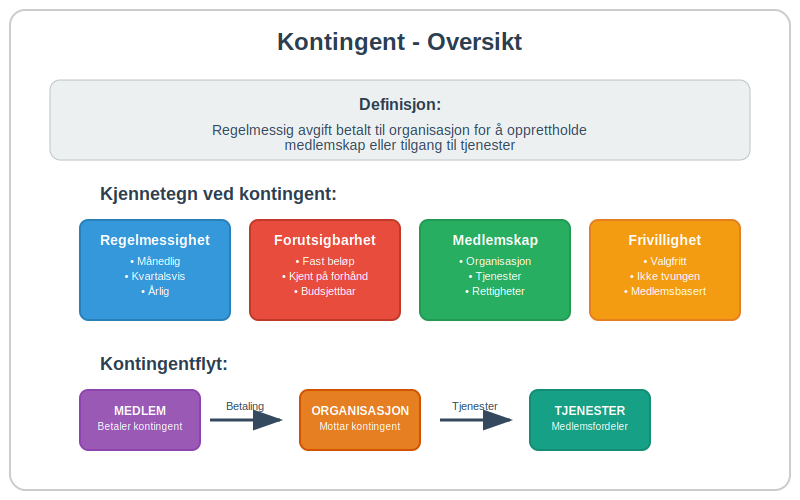
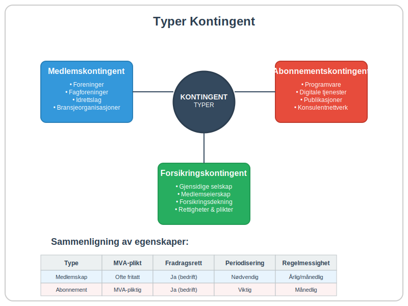
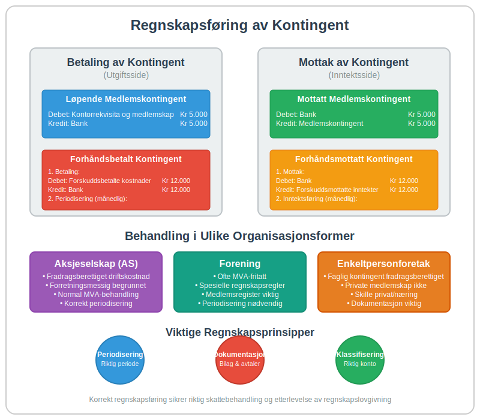
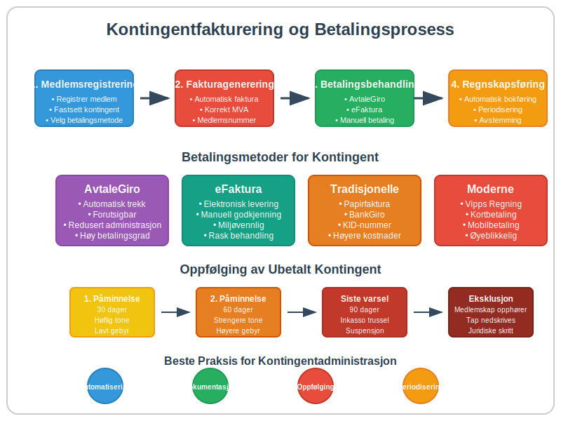

Kontingent er en regelmessig avgift eller medlemsavgift som betales til en organisasjon, forening eller institusjon for å opprettholde medlemskap eller tilgang til tjenester. I regnskapssammenheng representerer kontingent både en inntektskilde for mottakende organisasjoner og en driftskostnad for betalende bedrifter. Kontingent skiller seg fra andre avgifter ved at den typisk er frivillig, periodisk og knyttet til et spesifikt medlemskap eller abonnement.
Seksjon 1: Hva er Kontingent?
Kontingent kommer fra det latinske ordet “contingere” som betyr “å berøre” eller “å tilkomme”. I moderne forstand refererer kontingent til en forhåndsbestemt avgift som betales regelmessig for å opprettholde rettigheter, medlemskap eller tilgang til spesifikke tjenester.

Kjennetegn ved Kontingent
Kontingent har flere karakteristiske egenskaper som skiller den fra andre typer avgifter:
- Regelmessighet: Betales typisk månedlig, kvartalsvis eller årlig
- Forutsigbarhet: Fast beløp som er kjent på forhånd
- Medlemskapsbasert: Knyttet til medlemskap i en organisasjon eller tilgang til tjenester
- Frivillighet: Basert på frivillig deltakelse (i motsetning til obligatoriske skatter)
- Gjensidig forpliktelse: Både betaler og mottaker har forpliktelser
Seksjon 2: Typer Kontingent
Det finnes flere ulike typer kontingent som brukes i forskjellige sammenhenger. Hver type har sine egne karakteristikker og regnskapsmessige implikasjoner.

2.1 Medlemskontingent
Medlemskontingent er den vanligste formen og betales til foreninger, fagforeninger, idrettslag og andre medlemsorganisasjoner. For bedrifter som betaler medlemskontingent til bransjeorganisasjoner eller handelskamre, behandles dette som en driftskostnad i regnskapet.
2.2 Abonnementskontingent
Denne typen kontingent gjelder for tilgang til tjenester som:
- Programvare og digitale tjenester
- Faglige publikasjoner og databaser
- Konsulentnettverk og rådgivningstjenester
Abonnementskontingent behandles ofte som immaterielle rettigheter når de gir tilgang til intellektuell eiendom eller spesialiserte tjenester.
2.3 Forsikringskontingent
I forsikringssammenheng refererer kontingent til medlemsavgifter i gjensidige forsikringsselskaper hvor medlemmene både eier selskapet og er forsikringstakere. Dette skiller seg fra vanlige forsikringspremier ved at medlemmene har både rettigheter og forpliktelser i selskapet.
Seksjon 3: Kontingent vs. Andre Avgifter
For å forstå kontingent fullt ut, er det viktig å skille den fra andre typer avgifter og betalinger som bedrifter møter.
Sammenligning av Avgiftstyper
| Avgiftstype | Frivillighet | Regelmessighet | Motytelse | Eksempel |
|---|---|---|---|---|
| Kontingent | Frivillig | Regelmessig | Medlemskap/tjenester | Fagforeningskontingent |
| Merverdiavgift | Obligatorisk | Per transaksjon | Ingen direkte | 25% MVA på salg |
| Skatt | Obligatorisk | Regelmessig | Offentlige tjenester | Selskapsskatt |
| Gebyr | Situasjonsavhengig | Uregelmessig | Spesifikk tjeneste | Fakturagebyr |
| Lisens | Frivillig/Obligatorisk | Regelmessig | Bruksrettigheter | Programvarelisens |
Kontingent og MVA
Et viktig skille er at medlemskontingent til ideelle organisasjoner ofte er fritatt for merverdiavgift, mens kommersielle abonnementstjenester normalt er MVA-pliktige. Dette påvirker både bokføringen og den totale kostnaden for bedriften.
Seksjon 4: Regnskapsføring av Kontingent
Regnskapsbehandlingen av kontingent avhenger av om bedriften betaler eller mottar kontingent, samt hvilken type kontingent det gjelder.

4.1 Betaling av Kontingent (Utgiftsside)
Når en bedrift betaler kontingent, behandles det normalt som en driftskostnad. Bokføringen avhenger av kontingentens karakter:
Løpende Medlemskontingent
Debet: Kontorrekvisita og medlemskap Kr 5.000
Kredit: Bank Kr 5.000
Forhåndsbetalt Kontingent
Hvis kontingenten betales for en fremtidig periode, må den behandles som en forskuddsbetaling:
Debet: Forskuddsbetalte kostnader Kr 12.000
Kredit: Bank Kr 12.000
Deretter periodiseres kostnaden:
Debet: Kontorrekvisita og medlemskap Kr 1.000
Kredit: Forskuddsbetalte kostnader Kr 1.000
4.2 Mottak av Kontingent (Inntektsside)
For organisasjoner som mottar kontingent, behandles dette som driftsinntekt. Spesielle hensyn gjelder for foreninger og ideelle organisasjoner.
Mottatt Medlemskontingent
Debet: Bank Kr 5.000
Kredit: Medlemskontingent Kr 5.000
Forhåndsmottatt Kontingent
Kontingent mottatt for fremtidige perioder må behandles som utsatt inntekt:
Debet: Bank Kr 12.000
Kredit: Forskuddsmottatte inntekter Kr 12.000
Seksjon 5: Kontingent i Ulike organisasjonsformer
Behandlingen av kontingent varierer betydelig mellom ulike organisasjonsformer, og det er viktig å forstå disse forskjellene for korrekt regnskapsføring.
5.1 Aksjeselskap og Kontingent
For aksjeselskap som betaler kontingent til bransjeorganisasjoner, behandles dette som en fradragsberettiget driftskostnad. Kontingenten må være forretningsmessig begrunnet for å være fradragsberettiget.
5.2 Foreninger og Medlemskontingent
Foreninger har spesielle regler for medlemskontingent:
- Ideelle foreninger: Medlemskontingent er normalt fritatt for MVA
- Økonomiske foreninger: Kan være MVA-pliktige avhengig av virksomhetens art
- Særlige regnskapsregler gjelder for foreninger med begrenset regnskapsplikt
5.3 Enkeltpersonforetak og Kontingent
For enkeltpersonforetak er faglig kontingent fradragsberettiget når den er knyttet til næringsvirksomheten. Private medlemskap (som idrettslag) er ikke fradragsberettiget.
Seksjon 6: Kontingentfakturering og Betalingsrutiner
Effektiv håndtering av kontingent krever gode rutiner for fakturering og oppfølging, spesielt for organisasjoner som mottar kontingent fra mange medlemmer.

6.1 Automatisering av Kontingentinnkreving
Moderne organisasjoner bruker ofte automatiske betalingsløsninger for kontingentinnkreving:
- AvtaleGiro: Mest brukte løsning for regelmessig kontingent
- eFaktura: For medlemmer som ønsker manuell kontroll
- Digitale betalingsplattformer: Vipps, kort og andre moderne løsninger
6.2 Kontingentfaktura vs. Vanlig Faktura
Kontingentfakturaer har ofte spesielle kjennetegn:
- Forutsigbar periodisitet (månedlig, årlig)
- Fast beløp over tid
- Medlemsnummer som referanse
- Spesielle betalingsvilkår for medlemmer
En korrekt faktura for kontingent må fortsatt oppfylle alle lovpålagte krav, inkludert korrekt MVA-behandling.
6.3 Oppfølging av Ubetalt Kontingent
Organisasjoner må ha klare rutiner for oppfølging av ubetalt kontingent:
- Automatiske påminnelser via betalingsoppfordring
- Suspensjon av medlemsrettigheter ved langvarig manglende betaling
- Eksklusjon av medlemmer som siste utvei
- Nedskrivning av tap på uinnkrevelig kontingent
Seksjon 7: Skattemessige Aspekter ved Kontingent
Skattebehandlingen av kontingent har viktige implikasjoner for både bedrifter og organisasjoner.
7.1 Fradragsrett for Kontingent
Bedrifter kan normalt trekke fra kontingent som driftskostnad når:
- Kontingenten er forretningsmessig begrunnet
- Medlemskapet gir konkrete fordeler for virksomheten
- Beløpet er rimelig i forhold til fordelene
Private personer kan ikke trekke fra medlemskontingent, med unntak av fagforeningskontingent som er fradragsberettiget.
7.2 MVA-behandling av Kontingent
MVA-behandlingen varierer betydelig:
| Kontingenttype | MVA-plikt | Begrunnelse |
|---|---|---|
| Ideell forening | Fritatt | Ikke-økonomisk virksomhet |
| Fagforening | Fritatt | Spesielle regler |
| Bransjeorganisasjon | Ofte fritatt | Avhenger av tjenester |
| Kommersielt abonnement | MVA-pliktig | Økonomisk virksomhet |
| Forsikringskontingent | Fritatt | Forsikringsvirksomhet |
7.3 Periodisering og Skattetiming
For organisasjoner som mottar kontingent, er periodiseringsprinsippet viktig:
- Kontingent skal inntektsføres i den perioden den gjelder for
- Forhåndsmottatt kontingent skal ikke beskattes før opptjeningsperioden
- Korrekt periodisering sikrer riktig skattetiming
Seksjon 8: Digitalisering og Fremtiden for Kontingent
Digitaliseringen har revolusjonert hvordan kontingent håndteres, både for betalere og mottakere.
8.1 Automatiserte Kontingentsystemer
Moderne organisasjoner bruker integrerte systemer som kombinerer:
- Medlemsregister med automatisk kontingentberegning
- ERP-systemer for sømløs regnskapsintegrasjon
- Betalingsplattformer for automatisk innkreving
- Rapporteringsverktøy for analyse og oppfølging
8.2 Blockchain og Smart Contracts
Fremtidige løsninger kan inkludere:
- Smart contracts for automatisk kontingentbetaling
- Blockchain-baserte medlemsregistre
- Kryptovaluta-betalinger for internasjonale organisasjoner
- Desentraliserte medlemsorganisasjoner
8.3 Regulatoriske Endringer
Digitaliseringen fører til nye regulatoriske utfordringer:
- Betalingstjenestedirektivet (PSD2) påvirker betalingsløsninger
- GDPR stiller krav til håndtering av medlemsdata
- Nye MVA-regler for digitale tjenester
- Elektronisk fakturering blir stadig mer utbredt
Seksjon 9: Praktiske Tips for Kontingentadministrasjon
Effektiv kontingentadministrasjon krever gode rutiner og systemer, uavhengig av om du betaler eller mottar kontingent.
9.1 For Bedrifter som Betaler Kontingent
Budsjettplanlegging:
- Lag en oversikt over alle kontingenter og deres forfallsdatoer
- Inkluder kontingent i årlige budsjetter og budsjettering
- Vurder forretningsmessig nytte av hvert medlemskap årlig
Betalingsrutiner:
- Sett opp AvtaleGiro for regelmessige kontingenter
- Opprett påminnelser for årlige kontingenter
- Dokumenter alle kontingentbetalinger for regnskapsføring
9.2 For Organisasjoner som Mottar Kontingent
Medlemsadministrasjon:
- Implementer digitale medlemsregistre
- Automatiser kontingentfakturering
- Etabler klare rutiner for oppfølging av ubetalt kontingent
Regnskapsrutiner:
- Korrekt periodisering av kontingentinntekter
- Separate kontoer for ulike kontingenttyper
- Regelmessig avstemming av medlemsregister og regnskap
9.3 Juridiske Hensyn
Medlemsavtaler:
- Tydelige vilkår for kontingentbetaling
- Konsekvenser ved manglende betaling
- Prosedyrer for kontingentendringer
Personvern:
- GDPR-compliance for medlemsdata
- Sikker lagring av betalingsinformasjon
- Rett til sletting av medlemsopplysninger
Konklusjon
Kontingent er en fundamental del av mange organisasjoners økonomi og representerer en viktig kostnad for bedrifter som er medlemmer i bransjeorganisasjoner og faglige nettverk. Korrekt forståelse av kontingentens regnskapsmessige og skattemessige behandling er essensielt for både betalere og mottakere.
Nøkkelpunktene å huske:
- Kontingent er en regelmessig, medlemskapsbasert avgift
- Regnskapsbehandlingen varierer mellom organisasjonsformer
- MVA-reglene er komplekse og avhenger av organisasjonstype
- Digitalisering gjør kontingentadministrasjon mer effektiv
- Korrekt dokumentasjon er viktig for skattemessig fradragsrett
For bedrifter som ønsker å optimalisere sin kontingentadministrasjon, anbefales det å implementere digitale løsninger som integrerer med eksisterende ERP-systemer og sikrer korrekt bokføring av alle kontingentrelaterte transaksjoner.